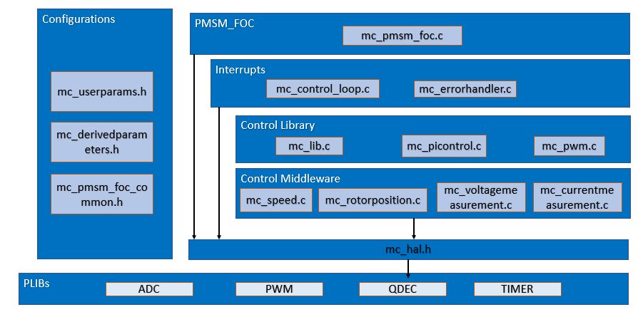

To use the PMSM_FOC motor control library,
- Add the PMSM_FOC component in the project graph.
- Connect to appropriate instance of ADC PLIB, PWM PLIB.
- Connect to X2CScope component. Further, connect X2CScope component to relevant UART PLIB identified for X2CScope communication.
- Connect to QDEC peripheral if sensored encoder position feedback is required.
- Configure the FOC parameters and generate the code.
Code Structure:

- Configurations:
- mc_userparameters.h contains the user configurations.
- mc_derivedparameters.h contains the calculated values used in the code.
- mc_pmsm_foc_common.h - common data structures and defines
- PMSM_FOC:
- mc_pmsm_foc.c/h - PMSM FOC algorithm interface file
- Interrupts:
- mc_control_loop.c - Control loop is implemented in the ADC result ready ISR.
- mc_errorhandler.c - PWM fault ISR to take corrective action on over-current
- Control library:
- mc_lib.c/h - FOC library
- mc_picontroller.c/h - PI controller implementation
- mc_pwm.c/h - Space Vector modulation (SVM) and updating PWM duty cycles
- Control Middleware:
- mc_speed.c/h - Calculate the reference speed
- mc_rotorposition.c/.h - Calculate the position and speed of the rotor
- mc_voltagemeasurement.c/h - Get the DC Bus voltage
- mc_currentmeasurement.c/h - Get the motor phase currents
- HAL:
- mc_hal.h - Hardware Abstraction Layer to interact with PLIBs
Usage:
- PMSM_FOC is initialized in the SYS_Initialize() function. Function name is PMSM_FOC_Initialize().
- Call PMSM_FOC_Tasks() in the while loop in the main.c
- Call X2CScope_Communicate() in the while loop in the main.c read, write, and plot global variables in real time
- Motor start/stop and direction change is done on the switch event. For MCLV2 board, press S2 to start/stop the motor. And press switch S3 to change the direction of the motor when motor is stopped.
- Vary the potentiometer to change the speed of the motor in speed loop.